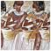
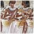

| |
These pages provide information on the wide range of events, resources, and reading material available from the Museum for those interested in learning more about Egypt. They also provide an overview of the Egypt galleries.
Whether you are a teacher looking for resources to use in class, or an interested adult looking for museum talks about Egyptian sculpture, these pages will provide the information you need.
Resources
|
The department provides both digital and paper resources. Our digital resources include online databases of objects from the collection and a dedicated website on ancient Egypt. Some of the paper resources can be downloaded for free.
See all Egypt resources...
|
|
Events
|
There is a wide variety of events and courses about Egypt. These include gallery talks, films, study days and workshops. You can view the What's On listing to see the events in the next couple of months, or you can look at events aimed specifically at schools, adults or families.
Eyeopener Tour: Egypt
A great introduction to the Egyptian collections. Daily. more...
See all Egypt events...
|
|
Galleries
|
This page provides an overview of the galleries containing objects from the Egypt collection. You will also find links to the COMPASS online database, which shows a selection of objects from each of the Egypt galleries.
Galleries 62 and 63: Roxie Walker Galleries of Egyptian Funerary Archaeology
Objects relating to ancient Egyptian burial practices and mummies.
See an overview of all the Egyptian galleries...
|
|
Further Reading
|
For a range of recommended books on Egypt, including books for younger readers and teachers, look at our Further Reading lists. Fantastic Mummies, John Taylor (London, The British Museum Press, 2004). New children's book to accompany the special exhibition Mummy: the inside story
See more books on Egypt...
|
|
Web Links

|
|


KS2 At a glance
download our pdf for an overview of all resources and events about ancient Egypt for KS2.
|
|
|


 



 Ancient Egyptian Hieroglyphs (KS2)
Ancient Egyptian Hieroglyphs (KS2) Mummy: the inside story - Online Tours to accompany the 3D digital exhibition.
Mummy: the inside story - Online Tours to accompany the 3D digital exhibition.